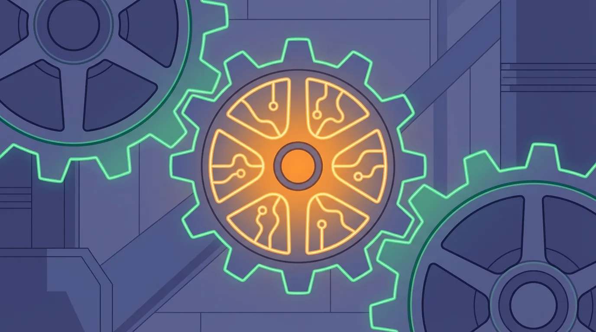

Branchenlösungen · · 8 Min.
KI für Kammern und Interessenvertretungen: Konkrete Anwendungen statt Buzzwords
Aus dem Archiv: Dieser Beitrag ist vor über einem halben Jahr erschienen. Manche Zahlen und Produktnamen haben sich seither geändert.

Mit KI erstellt (gpt-image-2.5-sunburst, 10/2026)Das Wichtigste in Kürze
- 593.639 aktive Mitglieder zählt die WKO österreichweit – jede Anfrage manuell zu beantworten ist nicht mehr machbar
- Die WK Wien setzt seit September 2023 KI-gestützte Voice- und Chatbots für 24/7-Mitgliederservice ein – das Modell funktioniert
- Die WKO entwickelt gemeinsam mit Microsoft und EY einen KI-Chatbot für die Fördermittelsuche – intern bereits im Einsatz
- Der kritische Erfolgsfaktor: Vertrauen. Mitglieder vertrauen Kammern sensible Daten an – ein schlechter Chatbot zerstört das
- Seit Februar 2025 ist KI-Kompetenz nach EU AI Act verpflichtend – Kammern müssen handeln
Kammern und Interessenvertretungen stehen vor einem Paradox: Sie sollen ihren Mitgliedern helfen, sich zu digitalisieren – aber wie digital sind sie selbst?
Die Wirtschaftskammer Wien hat eine interessante Antwort gegeben: KI-gestützte Voice- und Chatbots für den Mitgliederservice. Rund um die Uhr, 365 Tage im Jahr. In mehreren Sprachen.
Das ist mehr als ein Pilotprojekt. Das ist ein Modell für alle Kammern und Verbände.
Warum ist KI für Kammern jetzt relevant?
Kammern stehen vor einem strukturellen Problem: Die Anfragen steigen, das Personal wächst nicht mit. Laut WKO-Mitgliederstatistik vertritt die Wirtschaftskammerorganisation österreichweit 593.639 aktive Mitglieder. Jedes dieser Mitglieder hat Fragen – zu Förderungen, rechtlichen Rahmenbedingungen, Genehmigungen, Steuern.
Die Rechnung ist einfach: Wenn jedes Mitglied nur einmal pro Jahr anruft, sind das über 2.000 Anfragen pro Arbeitstag. Wenn 10% dieser Anfragen außerhalb der Öffnungszeiten kommen – wer beantwortet sie?
Die Alternative zu KI ist nicht "alles bleibt wie es ist". Die Alternative ist: Mehr Personal einstellen (teuer und kaum zu finden) oder längere Wartezeiten akzeptieren (frustriert Mitglieder und führt zu Abwanderung).
Der Fachkräftemangel trifft auch Kammern.
Was hat die WK Wien konkret umgesetzt?
Die Wirtschaftskammer Wien hat im September 2023 zwei KI-Tools gestartet, die den Mitgliederservice grundlegend verändern.
Der Chatbot I.S.A. (Information-Service-Auskunft):
Laut APA-Meldung beantwortet der KI-gestützte Chatbot Anfragen zu allen unternehmerischen Themen – von A wie Arbeitsrecht bis Z wie Zollbestimmungen. Das System wurde trainiert und lernt kontinuierlich dazu. Besonders wichtig: Der Chatbot versteht und spricht mehrere Sprachen, da rund ein Drittel der Wiener Unternehmerschaft eine andere Muttersprache als Deutsch hat.
Der Voicebot für telefonische Anfragen:
Parallel zum Chatbot steht ein Voicebot unter 01 51450-1010 zur Verfügung. Er nimmt Anliegen auf und leitet sie automatisch an die zuständige Stelle weiter. Das bedeutet: Auch um 22 Uhr kann ein Mitglied seine Frage stellen – sie wird nicht verloren, sondern dokumentiert und am nächsten Morgen bearbeitet.
Der Fahrplan der WK Wien:
- September 2023: Start des Voicebots und Pilotphase des Chatbots
- Juli 2024: Voicebot gibt Erstauskünfte zum Thema Gründung
- Februar 2025: Terminvereinbarungen über den Voicebot möglich
- Dezember 2025: Chatbot beantwortet alle Serviceanfragen
WK Wien-Präsident Walter Ruck: "Die Wirtschaftskammer Wien stellt den Anspruch, die modernste und schnellste Service-Organisation in Österreich zu sein."
Was die meisten übersehen: Der Vertrauensvorsprung
Die übliche Vorstellung: "Ein Chatbot auf der Website, der FAQ-Fragen beantwortet."
Das ist die Einsteiger-Version. Die interessanteren Anwendungen liegen tiefer – und hier haben Kammern einen entscheidenden Vorteil gegenüber anonymen KI-Tools wie ChatGPT.
Der Unterschied: Wenn ein Unternehmer ChatGPT eine Frage stellt, bekommt er eine generische Antwort. Wenn er den WK-Chatbot fragt, bekommt er eine Antwort, die auf österreichischem Recht basiert, auf WKO-Daten trainiert wurde und von einer Institution kommt, der er vertraut.
Dieses Vertrauen ist unbezahlbar – und es kann durch einen schlechten Chatbot zerstört werden.
Die Frage [wem die Daten gehören](/blog/ki-souveraenitaet-schatten-ki-oesterreich-2025) ist für Kammern besonders kritisch: Mitglieder vertrauen sensible Geschäftsdaten an. Wo werden diese verarbeitet? Wer hat Zugriff? Werden sie zum Training von KI-Modellen verwendet?
Die Antwort muss eindeutig sein: Lokale Verarbeitung, klare Datenschutzrichtlinien, keine Weitergabe an Dritte.
Welche konkreten Anwendungen funktionieren für Kammern?
Über den klassischen FAQ-Chatbot hinaus gibt es vier Anwendungsbereiche, die für Kammern besonders relevant sind:
1. Fördermittel-Matching
Die WKO hat gemeinsam mit Microsoft und EY einen KI-Chatbot für die Fördermittelsuche entwickelt. Ein Mitglied beschreibt sein Vorhaben in natürlicher Sprache – Branche, Bundesland, was gefördert werden soll. Das System prüft automatisch, welche der hunderten verfügbaren Förderungen passen könnten.
Das Ergebnis: Priorisierte Liste mit Schlüsselinformationen wie Förderhöhe und Kriterien. Die Förderberater können schneller und präziser entscheiden, welche Möglichkeiten für das Mitglied relevant sind.
2. Wissensmanagement
Kammern haben Jahrzehnte an Erfahrungswissen – in Köpfen, in Akten, in E-Mail-Archiven. KI kann dieses Wissen erschließen und für Berater zugänglich machen.
Statt "Ich muss bei einem Kollegen nachfragen" heißt es dann: "Das System zeigt mir drei ähnliche Fälle aus den letzten Jahren." Das ist besonders relevant, wenn erfahrene Mitarbeiter in Pension gehen. Mehr dazu im Artikel [Wie Sie Ihr Lebenswerk digital konservieren](/blog/lebenswerk-digital-konservieren-ki-wissenstransfer).
3. Personalisierte Information
Statt Newsletter, die alle bekommen, können Kammern individualisierte Informationen versenden – basierend auf Branche, Größe und aktuellen Anliegen des Mitglieds.
Proaktive Beratung: Das System erkennt, dass Mitglied X in einer Branche tätig ist, für die gerade eine neue Förderung ausgeschrieben wurde – und informiert aktiv.
4. Erstberatung und Triage
Ein neues Mitglied hat Fragen zur Gewerbeanmeldung. Statt in der Warteschleife zu hängen, führt ein KI-System durch die Standardfragen, sammelt relevante Informationen und verbindet erst dann mit einem menschlichen Berater – der sofort alle Details vor sich hat.
Das spart Zeit auf beiden Seiten und erhöht die Qualität der Beratung.
Was kostet die Implementierung?
Die Kosten für KI in Kammern variieren stark je nach Umfang:
| Variante | Investition | Laufende Kosten |
|---|---|---|
| Einfacher FAQ-Chatbot (Cloud) | 5.000-15.000 € | 500-2.000 €/Monat |
| Voicebot mit Weiterleitung | 20.000-50.000 € | 1.000-3.000 €/Monat |
| Vollständiges System wie WK Wien | 100.000+ € | 5.000+ €/Monat |
| Lokale Lösung (eigene Hardware) | 50.000-150.000 € | Minimal |
Die lokale Variante hat höhere Anfangsinvestitionen, aber keine laufenden Lizenzkosten und volle Datenkontrolle. Für Kammern mit sensiblen Mitgliederdaten ist das oft die bessere Wahl.
Zur Einordnung: Ein Vollzeit-Serviceberater kostet eine Kammer ca. 60.000-80.000 € pro Jahr (inkl. Nebenkosten). Ein KI-System, das 30% der Standardanfragen automatisiert beantwortet, refinanziert sich oft innerhalb von 1-2 Jahren.
Welche rechtlichen Anforderungen gelten seit 2025?
Der EU AI Act ist am 2. August 2024 in Kraft getreten. Seit Februar 2025 gilt die KI-Kompetenz-Pflicht nach Artikel 4: Unternehmen und Organisationen müssen sicherstellen, dass Mitarbeiter, die KI nutzen, ausreichend geschult sind.
Laut WKO betrifft das auch Kammern selbst: "Mitarbeitende im Unternehmen, die KI im Einsatz haben, müssen daher über gewisse Basisinformationen verfügen."
Für Kammern bedeutet das:
- Eigene Mitarbeiter schulen (KI-Kompetenz dokumentieren)
- Bei KI-Einsatz: Transparenzpflichten erfüllen
- Risikoklasse der eingesetzten KI bestimmen (meist "minimales Risiko")
Die gute Nachricht: Die meisten Kammer-Anwendungen (FAQ-Bot, Fördermittelsuche, Terminvereinbarung) fallen in die niedrigste Risikoklasse und sind kaum reguliert.
Was unterscheidet erfolgreiche von gescheiterten KI-Projekten?
Laut verschiedenen Studien scheitern die meisten KI-Projekte (je nach Definition 42-95%) – nicht an der Technik, sondern an der Umsetzung. Für Kammern sind drei Faktoren entscheidend:
1. Mitarbeiter einbinden, nicht überrumpeln
Der größte Fehler: KI als "Ersatz" für Mitarbeiter positionieren. Die WKO hat das richtig gemacht – der Chatbot ersetzt keine Berater, er entlastet sie von Routine-Anfragen.
Mehr dazu: [Warum die meisten KI-Projekte scheitern](/blog/ki-projekte-scheitern-change-management-vertrauen)
2. Klein starten, dann skalieren
Die WK Wien hat nicht sofort alle Funktionen freigeschaltet, sondern schrittweise: Erst Voicebot für Wartezeiten, dann Gründer-Hotline, dann Terminvereinbarung, dann vollständiger Chatbot.
3. Feedback-Schleifen einbauen
Der WKW-Chatbot lernt aus dem Feedback der Nutzer. Schlechte Antworten werden markiert, analysiert und verbessert. Ohne diesen kontinuierlichen Prozess wird jeder Chatbot mit der Zeit schlechter.
Was bedeutet das für Ihre Kammer oder Ihren Verband?
Wenn Sie in einer Kammer, einem Verband oder einer Interessenvertretung arbeiten, stellen sich zwei Fragen:
Erstens: Wo verbringen Ihre Mitarbeiter Zeit mit repetitiven Anfragen?
Das sind Ihre Automatisierungskandidaten. Nicht um Personal zu ersetzen, sondern um qualifizierte Berater für die Fälle freizumachen, die tatsächlich menschliche Expertise brauchen.
Typische Kandidaten:
- "Wann haben Sie geöffnet?"
- "Welche Unterlagen brauche ich für...?"
- "Gibt es Förderungen für...?"
- "Wie melde ich ein Gewerbe an?"
Zweitens: Welches Wissen schlummert in Ihren Archiven?
Jeder langjährige Mitarbeiter hat Fälle erlebt, die heute wieder relevant sein könnten. Dieses institutionelle Gedächtnis ist ein Vermögenswert – wenn es zugänglich ist. Ein KI-System kann helfen, dieses Wissen zu erschließen und zu bewahren.
Die eine Frage für heute
Wenn ein neues Mitglied heute um 22 Uhr eine dringende Frage hat – bekommt es eine Antwort?
Wenn nicht: Was würde es kosten, das zu ändern? Und was kostet es, wenn das Mitglied frustriert woanders hingeht?
Die WK Wien hat sich entschieden. 42 Gemeinden im Weinviertel haben sich ebenfalls entschieden und setzen bereits digitale Assistenten ein.
Die Frage ist: Was entscheiden Sie?
Weiterführende Artikel
- [KI im Gemeindeamt: Digital stark, nah beim Menschen](/blog/ki-gemeindeamt-lokale-ki-buergerservice-datenschutz) – Parallele Herausforderungen im öffentlichen Bereich
- [Wem gehören die Daten?](/blog/ki-souveraenitaet-schatten-ki-oesterreich-2025) – Warum Datenschutz bei KI so kritisch ist
- [Wie Sie Ihr Lebenswerk digital konservieren](/blog/lebenswerk-digital-konservieren-ki-wissenstransfer) – Wissensmanagement mit KI
- [Warum die meisten KI-Projekte scheitern](/blog/ki-projekte-scheitern-change-management-vertrauen) – Change Management als Erfolgsfaktor
- [Das Schleusen-Prinzip](/blog/schleusen-prinzip-cloud-ki-hybrid) – Welche Daten dürfen in die Cloud?
Quellen
- WK Wien revolutioniert Mitgliederservice mithilfe von KI (APA OTS)
- Wirtschaftskammer Österreich - Mitgliederstatistik (Wikipedia)
- WKO Fördermittelsuche mit Microsoft und EY
- WKO: Künstliche Intelligenz - Rechtliche Rahmenbedingungen
- Gemeinde-Chatbots in Österreich (MeinBezirk)
Armin Fradler begleitet Bildungsorganisationen und Teams beim Umgang mit KI und unterrichtet selbst in der Erwachsenenbildung.